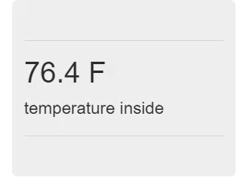

This is the third part of a series of posts about building an Internet of Things (IoT) server with flask, Python and ESP8266 microcontrollers. In the last post, we reviewed server and hardware setup. In this post, we'll build a web API with flask and push temperature data to our web API with a web browser.
Introduction
We already have a working flask app hosted on Digital Ocean. Now we need to add a web API to the flask app's functionality.
What is a web API?
A web API is a web-based Application Programming Interface. That's a fancy way of saying a server that saves input or produces output based on a URL the server recieves from a web browser.
An example of a web API is the ThingSpeak.com web API. When a web browser, like chrome, is directed to the followoing URL:
https://api.thingspeak.com/channels/266256/fields/2/last.txt
The response is a data entry stored on ThingSpeak.com that corresponds to:
- channel 266256
- field 2
- last entry
- .txt format
If the URL pasted into the web browser is different, ThingSpeak.com's response will also be different.
https://api.thingspeak.com/channels/9/fields/1/last.json
The response to the URL above is a data entry stored on ThingSpeak.com that corresponds to:
- channel 9
- field 1
- last entry
- .json format
Most web API's allow you to pull data off of their servers, but many web API's also give you the ability to put data up on their servers.
If the URL pasted into the web browser is constructed in the format below, ThingSpeak.com will store a new data point.
https://api.thingspeak.com/update?api_key=THECLASSAPIKEY&field1=87
The datapoint ThingSpeak.com stores when it recieves the GET request is:
- user with an API Key = THECLASSAPIKEY
- field = 1
- data = 87
The web API we'll build with flask needs to fullfill the same two basic functions the ThingSpeak.com web API accomplishes:
- Output a data point based on the particular URL the flask IoT server receives
- Store a data point based on the particular URL the flask IoT server receives
Web API Design
We're going to mimic part of the ThingSpeak.com web API in our flask IoT server web API. In order to store a data point based on the URL the server recieves, we need to specify how the URL must be structured. Our ESP8266-based WiFi weather stations need to know the URL format in order to post data points on the flask IoT server.
Data will be stored on our flask IoT server based on the URL the server recieves from the ESP8266-based WiFi weather stations.
There are a couple unique aspects to each of the ESP8266-based WiFi weather stations:
- a user: Each WiFi weather station has a user. In this case the user is me.
- a mac address: A mac address is a unique address assigned to each piece of hardware. Each of the ESP8266-based WiFi weather stations has a different mac address.
- field: The ESP8266-based WiFi weather stations have the capability to output temperature and humidity. Right now we are just going to deal with temperature, but it would be nice to have an extra field available for multiple data streams (like temperature and humidity) from the same device.
- data: The temperature measurement which comes out of each ESP8266-based WiFi weather station.
If we put these 4 identifiers as part of our web API URL, our IoT server will provide the functionality the WiFi weather stations need.
The general form of our web API URL is below:
https://mydomain.com/update/API_key=ASCIISTR/mac=6c:rf:7f:2b:0e:g8/field=1/data=72.3
In the URL above we've provided:
update(to tell the IoT server to save the data point, not just serve a webpage)API_key=ASCIISTR(to identify the user)mac=6c:rf:7f:2b:0e:g8(to identify the ESP8255-based WiFi weather station)field=1(to specify the data is a temperature, not humidity)data=72.3(to specify the temperature is 72.3 degrees)
Now we need to make our flask IoT server save the data point when a URL like the one we specified above comes in.
Construct a flask web API
Building web API's in flask is pretty easy due to flask's option of including a variable in a route. The general syntax is below:
@app.route("/update/key=<route_var>", methods=['GET'])
def update(route_var):
# code to run
return render_template("index.html")
In the code above, the route "/update/key=<route_var>" has a the variable <route_var> contained in it. The greater than/less than symbols < > tell flask there is a variable in the route. In the second line, the variable route_var (which came in from the @app.route() line) is passed as an argument to the update() function. Finally, the update() function returns a tempate called index.html.
Create a new route
There are four variables to assign in the @pp.route() URL of our flask web API:
| parameter | purpose | route variable |
|---|---|---|
| API key | unique identifier each user | <api_key> |
| mac address | unique identifier for each ESP8266 device | <mac> |
| field | denote temperature or humidity | <field> |
| data | data point to save on the server | <data> |
The complete @pp.route() URL for our web API looks like:
"/update/API_key=<api_key>/mac=<mac>/field=<int:field>/data=<data>"
We can now build a new @app.route()-function pair for this URL. Note we return a new template called update.html and pass the template the data point data.
@app.route("/update/API_key=<api_key>/mac=<mac>/field=<int:field>/data=<data>", methods=['GET'])
def update(api_key, mac, field, data):
return render_template("update.html", data=data)
Create a new template
Since we are calling a new template, we need to construct a new template. The template update.html can have the same form as index.html. Let's create a new file and copy in the following html code and jinja fields.
$ cd ~
$ cd flaskapp
$ cd templates
$ nano update.html
The code for the new update.html template is below:
<!-- update.html -->
<!DOCTYPE html>
<html lang="en">
<head>
<meta charset="UTF-8">
<meta http-equiv="X-UA-Compatible" content="IE=edge">
<meta name="viewport" content="width=device-width, initial-scale=1">
<title>show temp</title>
<!-- Latest compiled and minified CSS -->
<link rel="stylesheet" href="https://maxcdn.bootstrapcdn.com/bootstrap/3.3.7/css/bootstrap.min.css" integrity="sha384-BVYiiSIFeK1dGmJRAkycuHAHRg32OmUcww7on3RYdg4Va+PmSTsz/K68vbdEjh4u" crossorigin="anonymous">
<!-- Optional theme -->
<link rel="stylesheet" href="https://maxcdn.bootstrapcdn.com/bootstrap/3.3.7/css/bootstrap-theme.min.css" integrity="sha384-rHyoN1iRsVXV4nD0JutlnGaslCJuC7uwjduW9SVrLvRYooPp2bWYgmgJQIXwl/Sp" crossorigin="anonymous">
<!-- Latest compiled and minified JavaScript -->
<script src="https://maxcdn.bootstrapcdn.com/bootstrap/3.3.7/js/bootstrap.min.js" integrity="sha384-Tc5IQib027qvyjSMfHjOMaLkfuWVxZxUPnCJA7l2mCWNIpG9mGCD8wGNIcPD7Txa" crossorigin="anonymous"></script>
</head>
<body>
<div class="container-fluid">
<div class="jumbotron">
<hr class="my-4">
<h1 class="display-4"> {{ data }} </h1>
<p class="lead">last temperature uploaded</p>
<hr class="my-4">
</div>
</div>
</body>
</html>
Test the web API
Now on our server, we can restart the flask app and see if our web API works.
$ sudo systemctl start flaskapp
$ sudo systemctl status flaskapp
# [ctrl-c] to exit.
If we browse to the web address of the server, we should still see the same index template rendered.

But now if we go to the web address:
https://yourdomain.com//update/API_key=APGLMD/mac=a3:45:b5:c9/field=1/data=98.6
You see the update tempate rendered with a temperature of 98.6 shown.
Summary
It works! When we put a specific URL into our web browser, it causes the temperature we see on the web to change.
Next steps
In the next post, we'll modify our flask IoT server to do some validation of the input from the web API. We don't want just any person to bang away at the API and upload data points. We are also going to delve into Python's datetime module and add a datetime to each data point uploaded to our flask IoT server.